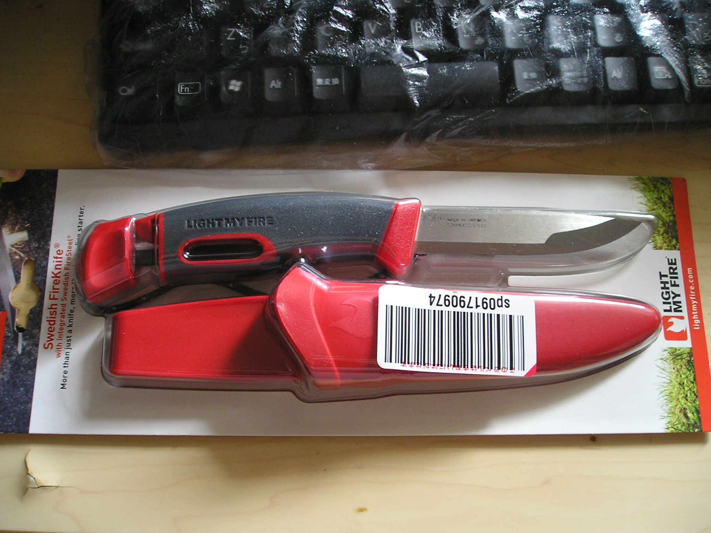
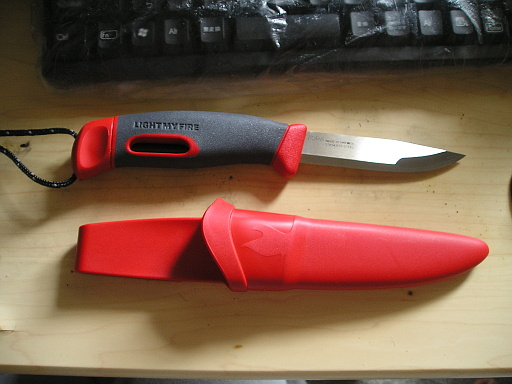
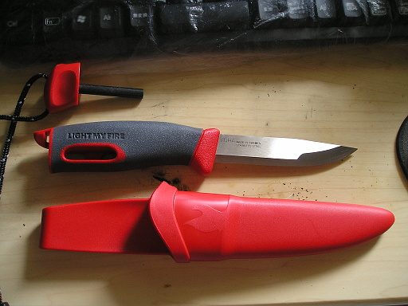
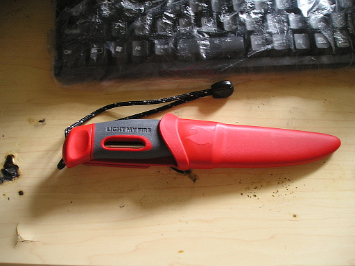

amazon から 2 本目のナイフが届きました。ライト・マイ・ファイヤとモーラのコラボしたファイヤー・ナイフというナイフです。全体的なシェイプはモーラっぽいですね。

パッケージから出したところです。

このナイフは普通のナイフとちょっと違っていて、

ジャーン！！ファイヤー・スチールをハンドルに内蔵しているのです！！上の写真はファイヤー・スチールを出したところです。このファイヤー・スチール、マグネシウム製だそうで、ストライカーの代わりにこのナイフの背中側を使って擦過させると、ちゃんと火花が飛びます。すばらしい。
ではナイフはシースに入れておきましょう。

先日、モーラのブッシュクラフト・ナイフを買って、木を切ったり、削ったり、割ったりするのに使うと書きましたが、その役目はこっちのファイヤー・ナイフにさせたほうが良さそうです。ブッシュクラフト・ナイフは調理やその他汎用的に使うようにしようかと思います。ブッシュクラフト・ナイフの背は角が丸く加工されていて、ストライカーの代わりになるための鋭角な角がないからです。
あとファイヤー・ナイフにはファイヤー・スチールの部分に紐がついていますが、この紐は 550 Fire Code を買って、それに取り替えようと思います。火熾し用ナイフのできあがりです。